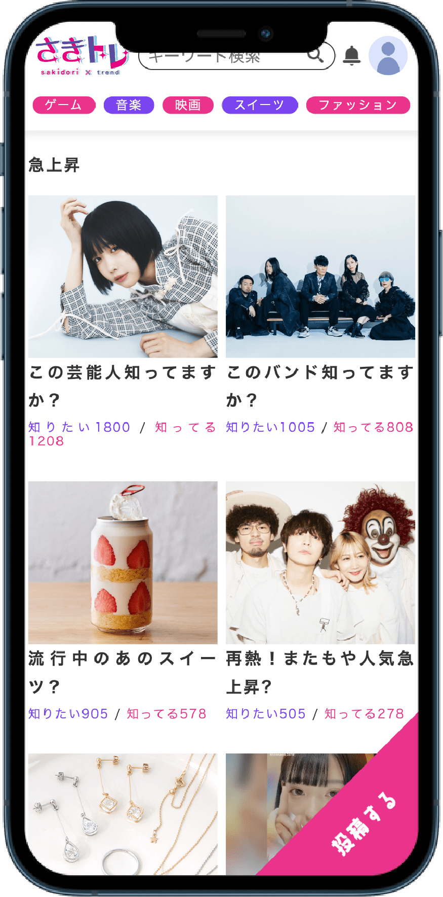

さきトレ

- 制作期間
- 3日
- 人数
- 4人
- 担当
- デザイン、コーディング
- 使用技術
- HTML, CSS(SCSS), JavaScript
- 作品概要
-
トレンドをさきどりできるチャット型の情報サイトを制作しました。レスポンシブのみ対応のサイトです。他校の生徒と三日間のWEB合宿で制作した作品です。きっかけはコロナ後に向けた新たなスタートです。今あったことが新しく変化していく時期だと思ったためです。ターゲットはトレンドを吸収する人が多い大学生です。また若者に何が流行っているのかを知りたい企業様にも使ってもらいたいです。
※学習用に、一時的にインターネット上から各画像をお借りしています
- こだわり
- サイトを開いてすぐ閲覧できる様にメインビジュアルはなくしてコンテンツである記事を配置しました。知りたい」の数が多いほどトレンドの高いものとなり急上昇に上がる様にしてトレンドを保つことができる仕組みです。